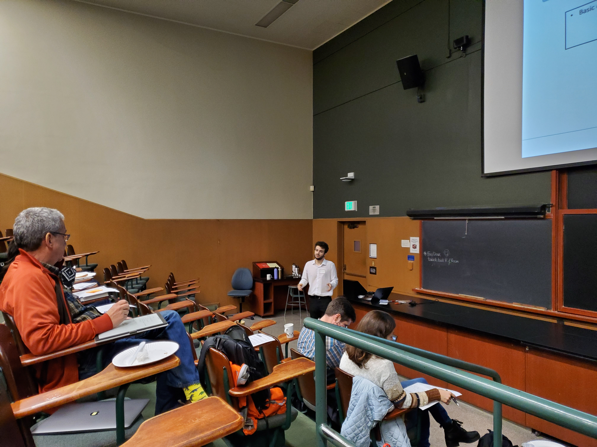
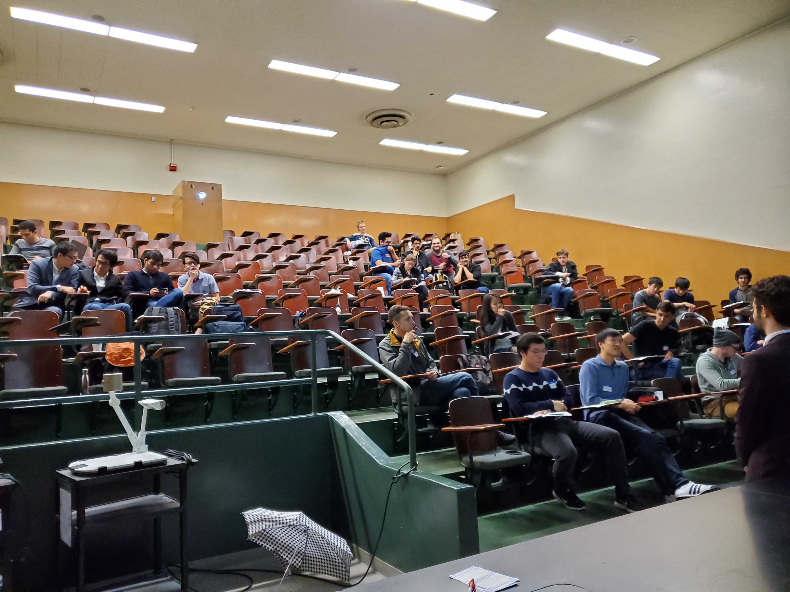

The International Physicists’ Tournament (IPT) is a world-class event held in Europe for undergraduate and first- or second-year graduate students from institutions around the world. Participating teams will solve a set of challenging, stimulating physics problems, theoretically as well as experimentally, and prepare to present and defend their findings to opponents and judges. Each country sends one team to compete, and before that, multiple competitions are held in a country at the state or national level to determine qualification. Traditionally, the United States has lacked representation in IPT until the 2018-2019 school year when Berkeley SPS hosted the first national IPT qualifiers which included several Berkeley teams.
Last year, with the lead of the Projects Coordinators Siddhant Mehrotra and Yonna Kim, Berkeley SPS invited multiple SPS chapters fromacross the United States. Students from the chapter at Rice University, UC Merced, and UC Berkeley came together during a two-day event where they battled several intriguing physics-based problems. In each round, each team volunteered one person to be either the Presenter, Opposer, and Reviewer. The Presenter explained their solution to a problem, the Opposers presented inconsistencies in the original solution or provided a different explanation, and the Reviewer mediated the discussion. Judges consisting of a panel of graduate students and professors awarded points and provided feedback. In the end, the team representing the chapter from Rice University received the opportunity to represent the United States. The Berkeley SPS team came in a close second, and consisted of juniors Erika Hathaway, Siddhant Mehrotra, sophomores Miguel Ceja and Shantanu Kadam (captain), and freshmen Brandon Abrego and Siddhant Mal. Students who would not have otherwise met were able to share valuable experiences and learn different thinking styles of physical phenomena, forming lifelong friendships and respect.
Interested in participating in the 2020-21 IPT? Opportunities to take part in the next IPT will be announced soon on this page.
The United States IPT page can be found here, and the main IPT page can be found here.
 